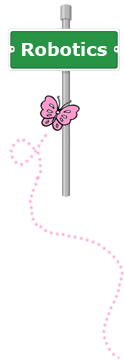
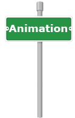

Summer Camps
Destination Robotics
Come and explore the exciting world of robotics! This camp introduces girls to building and programming robots using the LEGO Mindstorms NXT. Students will learn basic engineering and programming principles while having hands-on fun. FIRST LEGO League robotics competition challenges will also be introduced. No experience necessary.
Grades: 3 to 5 Dates: 2015 TBA Time: TBA Cost: Free
Grades: 6 to 8 Dates: 2015 TBA Time: TBA Cost: Free
Location: TBA
Application form
 Destination Websites
Destination Websites
Design and publish your own website! This camp introduces girls to website design using a powerful yet user-friendly website editor. Students will not only learn how to design creative text but also how to customize their images, graphics, and artwork. Create and publish your website online for the world to see at our website design camp.
Students will be grouped by grade and ability. No experience necessary.
Grades: 6 to 9 Dates: 2015 TBA Time: TBA Cost: Free
Location: TBA
Application form

Destination Animation
Learn to create your own interactive stories, animations and games! This fun and creative learning experience introduces girls to the basics of computer animation. As students create their projects, they will not only learn to think creatively but will also learn fundamental programming concepts. No experience necessary.
Grades: 3 to 5 Dates: 2015 TBA Time: TBA Cost: Free
Grades: 6 to 8 Dates: 2015 TBA Time: TBA Cost: Free
Location: TBA
Application form